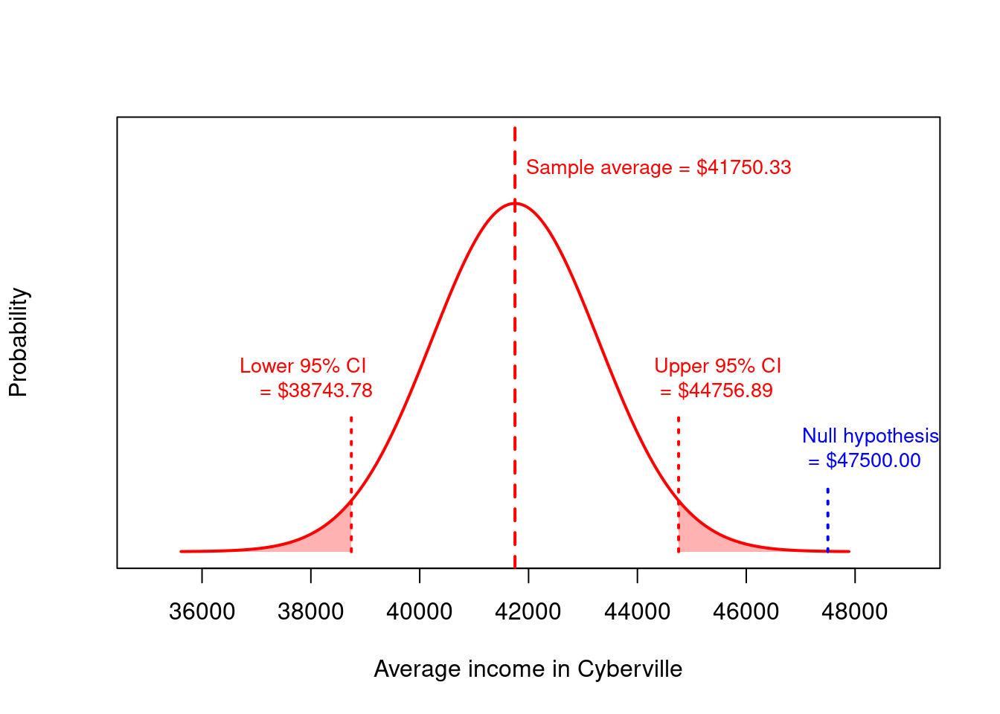
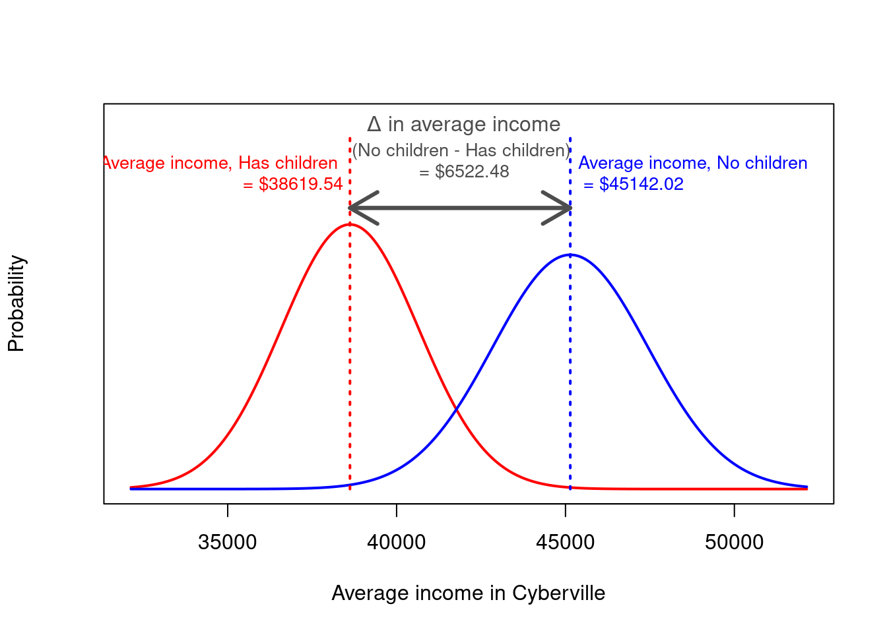
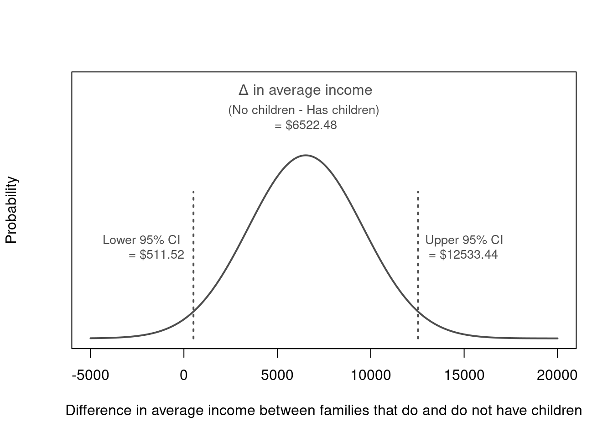
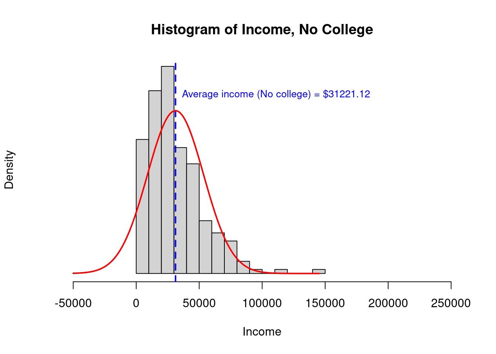
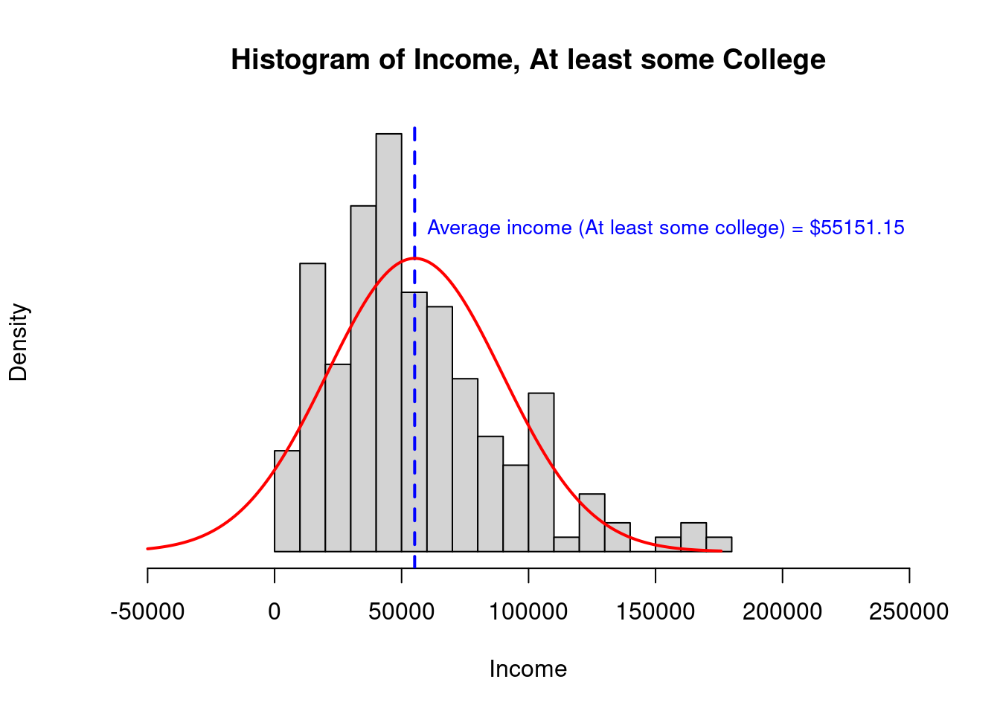
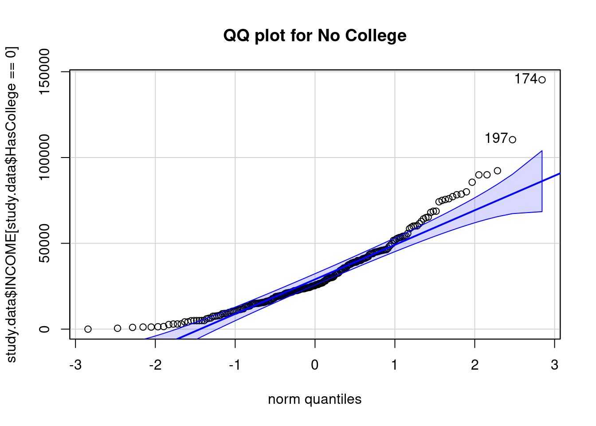
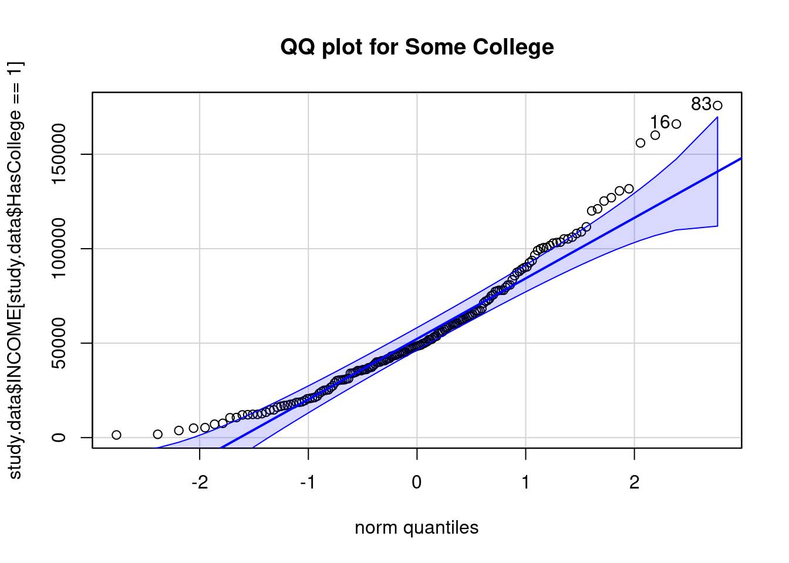

Learning objectives of this asynchronous lesson:
For this set of examples, I will use the Cyberville families data. Recall that this is a population dataset …
data <- read.table(url("https://publish.uwo.ca/~lhornic2/IveyStatistics/Datasets/families.txt"),
header = TRUE)
## suppress scientific notation for ease of reading numbers
options(scipen=99) As the first step in developing a one-sample t-test, we will start with understanding inference about a population parameter using a sample estimate.
For this section, we will focus on the question: What is the average income in Cyberville?
In order to answer that question, researchers surveyed a random sample of 400 people.
With that random sample, we will calculate the
# To ensure that this page will produce the same results every time, we will set the random number seed.
set.seed(11)
n <- 400 # sample size
select.obs <- sample(1:nrow(data), n) # from a list of numbers (1, 2, 3, ... ), select n of them at random
# from the original data frame, name a new dataset only keeping the observations in the sample
study.data <- data[select.obs, ]
# Calculate the sample mean of Income
sample.avg <- mean(study.data$INCOME)
# Calculate the sample sd of Income
sample.sd <- sd(study.data$INCOME)
# Calculate the standard error for the study where n = 400
se <- sample.sd / sqrt(n)
# Use the se and the Normal distribution to calculate the 95% CI
lowerCI = sample.avg + qnorm(0.025, mean = 0, sd = 1) * se
upperCI = sample.avg + qnorm(0.975, mean = 0, sd = 1) * se
print(cbind(sample.avg, lowerCI, upperCI))> sample.avg lowerCI upperCI
> [1,] 41750 38744 44757There is a 95% probability that the true population average income is within the interval $38,744 to $44,757.
Let’s consider the question: Is the average income in Cyberville consistent with the national average of $47,500?
Further consider a simple alternative hypothesis: the average income in Cyberville could either be greater than or less than the national average. This is a “two-sided” alternative hypothesis.
Now let’s use a one-sample two-sided t-test to calculate the probability of observing the mean of $41,771 from a random sample of 400, by random chance, when the truth is actually $47,500.
# One-sample, two-sided, t-test
# H0: Mean income = 45000
t.test(x = study.data$INCOME,
alternative = "two.sided", # this is the default and so it wasn't required to specify
mu = 47500) # the null hypothesis; average income = $47,500>
> One Sample t-test
>
> data: study.data$INCOME
> t = -4, df = 399, p-value = 0.0002
> alternative hypothesis: true mean is not equal to 47500
> 95 percent confidence interval:
> 38735 44766
> sample estimates:
> mean of x
> 41750Observe the p-value is 0.0002.
Therefore, we reject the null hypothesis that the average income in
Cyberville is $47,500.
The t-test output in R also reports the 95% confidence interval. The interval reported by R is slightly different than what we calculated because the R function, very properly, uses the t distribution. Do not worry about this.
More importantly, notice that the implications from performing this test (rejecting the null hypothesis) is consistent with the 95% confidence interval we already calculated. We had already calculated, that there is a 95% probability that the true population average income is within the interval $38,744 to $44,757. Because the null hypothesis of this one-sample t-test, $47,500, is not within that interval, we know to reject the null hypothesis.
This is another example of the equivalence of confidence intervals and p-values.

Similarly, we can calculate the probability of $47,500 or something less likely than $47,500 being the true population mean using the distribution of the sample mean.
# Using the sample distribution, what is the probability of $45,000 or greater being the true population mean?
1 - pnorm(47500, mean = sample.avg, sd = se)> [1] 0.0000891# Because we are doing a *two-sided* t-test and the Normal distribution is symmetrical
# we need to double the associated with the probability of $45,000 or greater
# The p-value is then
(1 - pnorm(47500, mean = sample.avg, sd = se)) * 2> [1] 0.000178Observe that using the distribution of uncertainty around the sample mean (using Normal approximation), we also calculate the p-value of the one-sample, two-sided, t-test to be 0.0002.
Let’s consider a new question: Do families with children have the same average income as families without children?
This is now a “two-sample” problem where the families with children represent one sample, and the families without children represent the other sample. These two samples are independent of each other so this is also called a independent samples t-test, contrasting it from the paired t-test in which samples are not independent from each other.
This dataset reports the number of children in a family, so we need to create a new variable dividing the population into just two groups.
# Create a variable identifying whether or not a family has children
study.data$HasChildren <- 0 # initialize the variable
study.data$HasChildren[ study.data$CHILDREN > 0 ] <- 1 # assign a 1 if CHILDREN >0Alternative hypothesis: the average income of families with children could either be greater than or less than the average income of families without children. This is a “two-sided” alternative hypothesis.
Now let’s use a two-sample two-sided t-test to calculate the probability of observing, by random chance from a random sample of 400, the specific group means when the truth is actually that both groups have the same average income.
# Two-sample, two-sided, t-test
# For transparency, I list two of the default settings in the specification of the test.
# H0: Families with and without children have the same average income
t.test(study.data$INCOME ~ study.data$HasChildren,
var.equal = FALSE, # Default setting: not required to specify
alternative = "two.sided") # Default setting: not required to specify>
> Welch Two Sample t-test
>
> data: study.data$INCOME by study.data$HasChildren
> t = 2, df = 388, p-value = 0.03
> alternative hypothesis: true difference in means between group 0 and group 1 is not equal to 0
> 95 percent confidence interval:
> 493 12552
> sample estimates:
> mean in group 0 mean in group 1
> 45142 38620Observe the p-value is 0.03. Therefore, we reject the null hypothesis that the average income is the same for families with and without children.
The t-test output in R also reports the group means. As a best practice, I recommend that you calculate these before performing the test. Then, if they do not match, you know that something may be wrong with how you specified the t-test.
In addition, the t-test output reports the 95% confidence interval. This interval is the confidence interval for the difference between the two groups. An equivalent way of writing the null hypothesis is that the difference between the two group is zero. This is reporting that there is a 95% probability that the true difference in average income between people with and without children is between $492.70 and $12,552.30.
Notice again that the implications from performing this test (rejecting the null hypothesis) is consistent with the 95% confidence interval for the difference. This 95% interval indicates that there is a less than 5% chance that the true difference between these groups contains zero (no difference).
There are other ways to gain this same insight. For example, we can calculate the average income for each group, the standard error and the 95% confidence intervals for those estimates.
# Calculate the group average income, sd of income, se, and 95% CI
income.summary <- t(aggregate(study.data$INCOME ~ study.data$HasChildren,
FUN=function(x) {
c(avg = mean(x),
n = length(x),
var = var(x),
sd = sd(x),
se = sd(x)/sqrt(length(x)),
lower95 = mean(x) + qnorm(0.025)*sd(x)/sqrt(length(x)),
upper95 = mean(x) + qnorm(0.975)*sd(x)/sqrt(length(x))
)
}
))
income.summary> [,1] [,2]
> study.data$HasChildren 0 1
> study.data$INCOME.avg 45142 38620
> study.data$INCOME.n 192 208
> study.data$INCOME.var 1012408474 859609963
> study.data$INCOME.sd 31818 29319
> study.data$INCOME.se 2296 2033
> study.data$INCOME.lower95 40641 34635
> study.data$INCOME.upper95 49643 42604The Central Limit Theorem tells us that the uncertainty around the sample means is Normally distributed with standard deviations equal to the standard error.
Because the sum or difference of two Normal distributions is also Normally distributed, we can calculate the distribution of the difference in average incomes between the two groups.
means <- income.summary["study.data$INCOME.avg", ]
Mean.Diff <- income.summary["study.data$INCOME.avg", 1] - # avg income for HasChildren == 0
income.summary["study.data$INCOME.avg", 2] # avg income for HasChildren == 1
# The variance of a difference between two random variables is the sum of their variance (less any covariance, which is zero when the two RV are independent, as they are here)
SE.Diff <- sqrt(
income.summary["study.data$INCOME.se", 1]^2 # se^2 HasChildren == 0
+ income.summary["study.data$INCOME.se", 2]^2 # se^2 HasChildren == 1
) # sqrt the sum to return the variance to a standard deviation
# calculate and print the 95% confidence interval around the difference
lower95 = qnorm(0.025, mean = Mean.Diff, sd = SE.Diff)
upper95 = qnorm(0.975, mean = Mean.Diff, sd = SE.Diff)
print(cbind(Mean.Diff, lower95, upper95))> Mean.Diff lower95 upper95
> study.data$INCOME.avg 6522 512 12533# Calculate the probability that the truth is zero or something less likely than zero given this observation
# this is the p-value of the two-sample, two-sided, t-test
pnorm(0, mean = Mean.Diff, sd = SE.Diff)*2> [1] 0.0334Observe that using the distribution of uncertainty around the difference in the sample means (using Normal approximation), we also calculate the p-value of the two-sample, two-sided, t-test to be 0.03.


Prior to performing a independent samples t-test, it is important to know whether the underlying assumptions of a t-test are present. If they are not, it may not be appropriate to perform a t-test at all. While R will always report a p-value when you try to compare the means of two groups, that p-value might be completely meaningless if these conditions do not hold.
There are four key assumptions of a t-test
Let’s walk though all the steps of a independent samples t-test for a second example.
Consider the question: Do families with at least some college education have the same average income as families without any college?
First, we need to create a variable for whether people have Any College:
# Create a variable identifying whether or not the survey respondent has any college
study.data$HasCollege <- 0 # initialize the variable
study.data$HasCollege[ study.data$EDUCATION >= 40 ] <- 1 # assign a 1 if Any CollegeH0: Average income for people without any college is equal to the average income for people with college
HA: Average income for people without any college is not equal to the average income for people with college
This assumption requires understanding how the data were collected.
Our data are a random sample of the whole population so any relationships between households would be randomly occurring within the data. Therefore, the observations are independent.
There are several reasonable approaches for evaluating whether a distribution is Normal, but some are very sensitive and will declare data not Normally distributed when it is really good enough for a t-test.
The ‘nortest’ package in R has numerous statistical tests that seek to evaluate whether data are Normally distributed. Each test has its own strengths and weaknesses. In general, these tests are very sensitive compared to what is actually acceptable for a t-test. It is recommended that histograms and QQ plots be used when the sample size is more than 50 observations and Shapiro-Wilk test is used for smaller sample sizes.
We can evaluate the distribution of income in both groups using a histogram. From our prior lesson, we expect that the distribution of income may be right skewed.

The No College income histogram is clearly right skewed. Neither distribution has any observations less than $0 and so neither distribution has a complete left tail.
A Q-Q plot presents the percentiles of the data vs. the percentiles of a standard Normal distribution.
When data are Normally distributed, a Q-Q plot will indicate the points form a straight line within the bounds of the blue ribbon.
> Loading required package: carData## QQ plot
# library(car) ## the QQ plot in the car package is nice
qqPlot(study.data$INCOME[study.data$HasCollege == 0],
main = "QQ plot for No College")
> [1] 174 197qqPlot(study.data$INCOME[study.data$HasCollege == 1],
main = "QQ plot for Some College")
> [1] 83 16When data are Normally distributed, a Q-Q plot will indicate the points form a straight line within the bounds of the blue ribbon.
Numerous formal statistical tests exists to evaluate whether data are Normally distributed.
For each of these tests, the null hypothesis is that the data are Normally distributed. Therefore, when the p-value is below 0.05, rejecting the null hypothesis indicates that the data are not Normally distributed.
## Lilliefors Test
library(nortest)
# Null hypothesis:
lillie.test(study.data$INCOME[study.data$HasCollege == 0])>
> Lilliefors (Kolmogorov-Smirnov) normality test
>
> data: study.data$INCOME[study.data$HasCollege == 0]
> D = 0.1, p-value = 0.0000001lillie.test(study.data$INCOME[study.data$HasCollege == 1])>
> Lilliefors (Kolmogorov-Smirnov) normality test
>
> data: study.data$INCOME[study.data$HasCollege == 1]
> D = 0.09, p-value = 0.001shapiro.test(study.data$INCOME[study.data$HasCollege == 0])>
> Shapiro-Wilk normality test
>
> data: study.data$INCOME[study.data$HasCollege == 0]
> W = 0.9, p-value = 0.0000000002shapiro.test(study.data$INCOME[study.data$HasCollege == 1])>
> Shapiro-Wilk normality test
>
> data: study.data$INCOME[study.data$HasCollege == 1]
> W = 0.9, p-value = 0.000001In this case, formal statistical tests all indicate that we should reject the null hypothesis that the data are Normally distributed.
Overall, because the Central Limit Theorem is so strong, the t-test is fairly robust to this assumption. Even when the data are not really Normal, the uncertainty around the sample mean will be Normally distributed when there is sufficient sample size. While you should be aware of what the shape of the distributions are and how that may affect the t-test, you can still use it on remarkably not Normal data. Ultimately, I do not recommend using formal statistical tests to evaluate Normality of the data.
Based on the histogram with Normal overlay and the Q-Q plots, I would deem this data (with about 200 observations in each group) to be sufficiently Normal to use a t-test. However, I would also consider using a non-parametric test (such as the Mann-Whitney U test) to validate any conclusions.
One concern when working with right skewed data is that the extreme values in the tail have undue influence on the average. In this case, the No College data are more skewed and this may pull the average income higher. Ultimately, the mean may not be a relevant representation of income in this group. In that case, again, I would lean on a non-parametric test, either the Kolmogorov-Smirnov test, Mann-Whitney U test, or the Medians test depending on what the motivation behind the research question is.
The F test is a statistical tests to compare variances between two independent samples.
In general, when the the sample standard deviation is not quite close, it is conservative to use Welsh’s t-test which includes a correction proportional to the difference in variance between groups. (As in, if there is no difference, no correction is made.)
Welsh’s t-test is the default in R (seen in the R code as var.equal = FALSE).
In this case, the variances are quite different and that is plain to see in the histograms above and in the fact that one standard deviation is more than 50% larger than the other.
# Calculate the group average income, sd of income, se, and 95% CI
income.byCollege <- t(aggregate(study.data$INCOME ~ study.data$HasCollege,
FUN=function(x) {
c(avg = mean(x),
n = length(x),
var = var(x),
sd = sd(x),
se = sd(x)/sqrt(length(x)),
lower95 = mean(x) + qnorm(0.025)*sd(x)/sqrt(length(x)),
upper95 = mean(x) + qnorm(0.975)*sd(x)/sqrt(length(x))
)
}
))
income.byCollege> [,1] [,2]
> study.data$HasCollege 0 1
> study.data$INCOME.avg 31221 55151
> study.data$INCOME.n 224 176
> study.data$INCOME.var 497270750 1189858919
> study.data$INCOME.sd 22300 34494
> study.data$INCOME.se 1490 2600
> study.data$INCOME.lower95 28301 50055
> study.data$INCOME.upper95 34141 60247Now that we have decided that a Welsh’s independent sample t test is reasonably appropriate, we can run our t test and interpret the findings.
# Two-sample, two-sided, t-test
# For transparency, I list two of the default settings in the specification of the test.
# H0: Families with and without children have the same average income
t.test(study.data$INCOME ~ study.data$HasCollege,
var.equal = FALSE, # Default setting: not required to specify
alternative = "two.sided") # Default setting: not required to specify>
> Welch Two Sample t-test
>
> data: study.data$INCOME by study.data$HasCollege
> t = -8, df = 285, p-value = 0.00000000000003
> alternative hypothesis: true difference in means between group 0 and group 1 is not equal to 0
> 95 percent confidence interval:
> -29829 -18031
> sample estimates:
> mean in group 0 mean in group 1
> 31221 55151We observe a p-value of 0.00000000000003485. Therefore, we reject the null hypothesis that the average income is the same for families with and without some college.
In addition, the report provides the 95% confidence interval for the difference as $18,031 to $29,828.
Next: Mann-Whitney U Test
If there are too few data to evaluate whether the assumptions of a t-test hold or if there is enough data and the parametric assumption of Normal distribution does not hold, then often the best alternative for comparing two samples is the Mann-Whitney U test.